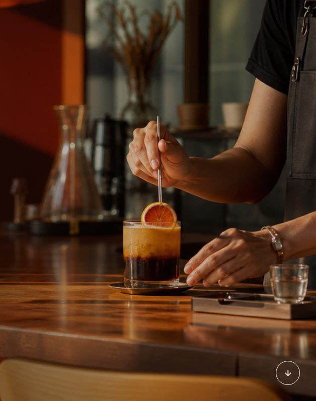

04 / 04
Website editing · Publishing
Website Manager
Letting business owners update their own websites—safely, and without calling a developer.

bright way.
Selected block
1 change readyExact revision protected
What they needed
Let people with no technical background change their live website without worrying about breaking it.
- 2
- client websites run through it
- 2×
- side-by-side before-and-after check
- 24/7
- updates that finish even after an interruption
The key idea
Every change is saved, shown side by side with the current website, and only goes live after a final check. If something interrupts an update, it simply picks up where it left off.
Read the full story
The problem
Editing is easy. Updating a live website safely is not.
Two people editing at once, updates planned for later, shared photos, and updates that fail halfway can all put the wrong thing on a live website.
What we did
Show exactly what will change.
Owners click the part of their Moof or MySOS website they want to change and see the result straight away. Every draft is kept, each person only sees the websites they look after, and nothing goes live without a check.
The result
Simple on the surface, dependable underneath.
Owners can schedule updates, look back at past versions, and get email or Telegram alerts. The system checks that each update actually went live, and tries again on its own if it did not.
Visual editing · Publishing · Ongoing support